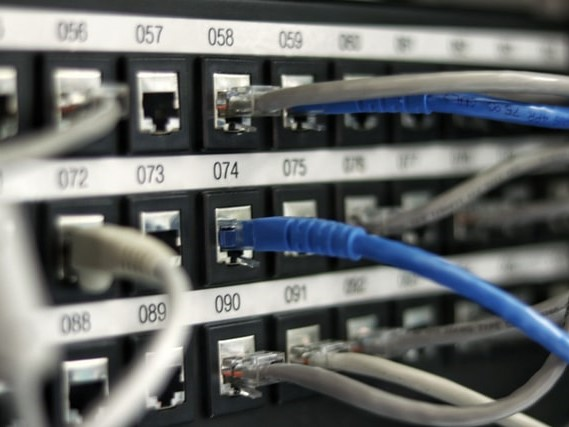

DataCenter Solutions

Fiber Optics Solutions

Network Solutions
VPN Solutions
Data center solutions refer to the products and services needed to create and maintain a data center. Products include IT equipment, like servers, routers, storage systems, and firewalls, as well as supporting infrastructure for the physical data center, like cooling systems, batteries, generators and cabling. Services include technical support, installation, and configuration. Depending on size and needs, a business may use its own data centers or it may share a section of a data center with other tenants. Consequently, data center solutions can include just the setup and maintenance of certain racks within a data center, or they can expand to include the design and construction of an entirely new, proprietary data center.
Today, practically every communication network contains fiber optics. In most cases, fiber optics are used because of their convenience. Fiber optic cable allows network builders to divide their network into smaller service areas that prevent large numbers of customers from being affected in an outage. The result is better service and customer relations. Fiber optic cable also gives them a fast return path which they use for internet and telephone connections, thereby increasing their revenue potential. Local Area Networks (LANs) use fiber optics primarily in the backbone of the network, but the use of fiber optics to the desk is increasing. The LAN backbone often needs longer distance transmissions and more bandwidth than copper cable is capable of providing. Fiber easily offers the higher bandwidth needed to prepare the network for the much higher speeds projected for the near future. The use of fiber optics is not just limited to communication networks. Cable and telephone providers often use fiber for its distance capabilities. Distance is also an advantage to industrial plants that use vast amounts of fiber primarily for its noise immunity. Utilities also prefer fiber for noise immunity, security and high bandwidth properties. The military uses fiber because it’s nearly tap-proof and impossible to jam. Fiber is even used by the aviation and aerospace industries because of its smaller size and weight.
In today’s rapidly evolving digital world, a network that is agile, responsive, and secure will be the key that unlocks your company’s true potential. Our skilled engineers will pinpoint the strengths and weaknesses of your current infrastructure before mapping a plan that will expedite your push into digitization. Our experience, creative spirit, and world-class vendor partnerships will open closed doors and invite opportunity for growth. Indeed, a secured, automated, and scalable network welcomes success. We provide a platform that can support today’s digital demands and can adapt to your future needs.
What Can a VPN Do for You? A VPN can help to protect you in a few key ways: VPNs encrypt all the data you send over the internet. When you’re connected to a VPN server, all your internet traffic is encrypted. This means that nobody can see what you’re doing online, not even your internet service provider (ISP). And that means your ISP can't throttle your speeds either. Encryption stops hackers from seeing sensitive information that you enter into websites, like your passwords. This is especially important if you’re using public WiFi because it's easy for cybercriminals to monitor your connection on public networks. But a VPN makes sure that even if someone stole your data, they wouldn't be able to decrypt it or even understand it. Your VPN also protects your privacy. Websites and services use your IP to determine your location. When you connect to a VPN server, your IP address won't be visible. Because they can no longer see your real IP, they can’t see where you’re located. Some VPNs block malicious websites, ads, and trackers. Malicious websites can download malware and trackers onto your device without you knowing. VPNs with built-in protection help to prevent infections by blacklisting these sites before they can do damage. Some also block ads and pop-ups. This stops malicious ads from infecting your device with malware.
An IPsec VPN uses the standard IPsec mechanism to establish a VPN over the public Internet. An IPsec VPN is most useful for establishing a VPN between fixed end-points, such as two offices. For supporting roaming users, an SSL VPN is generally a better choice because it requires no installation or configuration on the client machine and enforces endpoint security.